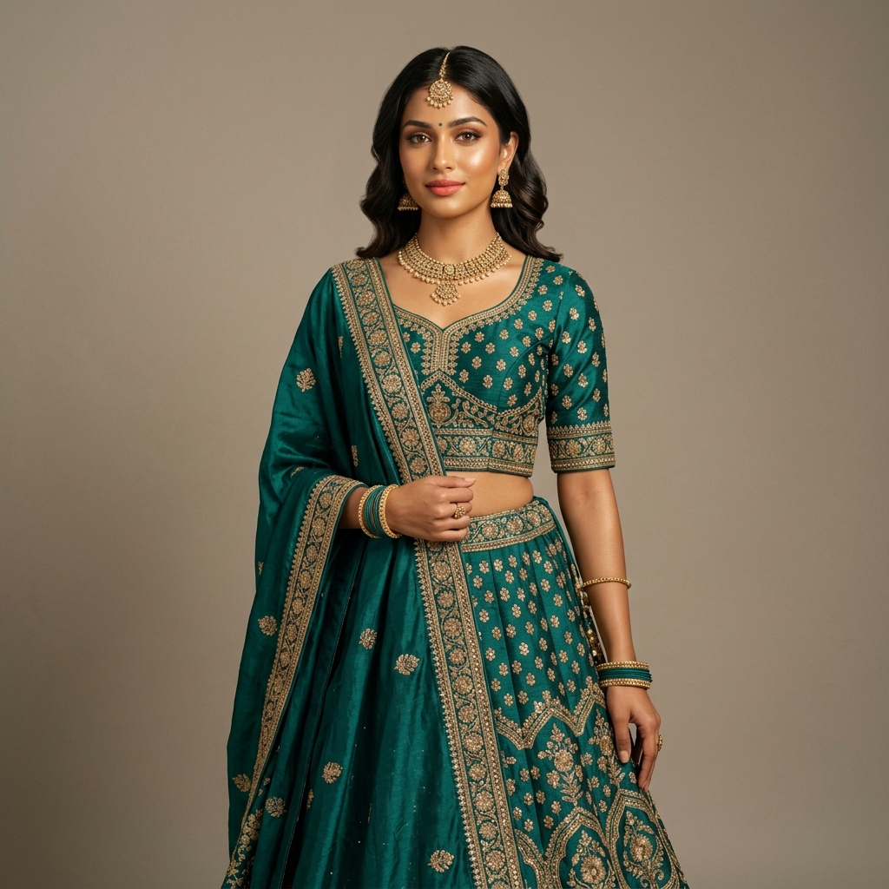

Last updated: July 18, 2026
Why Certain Garment Colors Make Wheatish Skin Look Dull (And How to Fix It)

Wheatish skin is the most common complexion across the Indian subcontinent. Ranging from light golden-wheat to warm honey-brown and deep olive, wheatish skin possesses a beautiful natural radiance.
Yet almost everyone with a wheatish complexion has experienced putting on a specific kurta, saree, or t-shirt and instantly noticing that their skin looks dull, greyish, tired, or washed out — even on days when they are well-rested.
The issue is rarely your skin; it is garment color mechanics. When clothing colors clash with the underlying warmth of wheatish skin, they absorb natural light from your face instead of reflecting it.
In this guide, we diagnose the 4 most common "glow-draining" garment color culprits, explain the science of undertone disharmony, and share 3 practical hacks to rescue clothes in your closet that make you look washed out.
The Color Science: Why Clothes Make Wheatish Skin Look Washed Out
Wheatish skin complexions almost universally feature warm golden or olive undertones.
When a garment's color sits against warm skin, one of two things happens:
1. Harmonious Reflection: The garment's color pigment complements your golden undertone, causing light to reflect upward onto your jawline and cheeks, giving your face a healthy, radiant glow.
2. Harmonious Extraction (Dulling): If the garment color is too cool-toned, chalky, or desaturated, it fights against your natural warmth. The cool pigment visually "pulls" the golden glow out of your complexion, leaving your skin looking muted or greyish.
```
+-----------------------------------------------------------------------+
| GARMENT COLOR MECHANICS ON WHEATISH SKIN |
|---|
+-----------------------------------------------------------------------+
| Harmonious Garments (Rich/Warm): | Disharmonious Garments (Cool/Chalky): |
|---|---|
| - Mustard, Teal, Coral, Emerald | - Ash Grey, Icy Mint, Pale Beige |
| - Reflects golden light upward | - Drains warmth, skin looks grey |
| - Enhances natural radiance | - Creates tired, washed-out look |
+-----------------------------------------------------------------------+
```
The 4 "Glow-Draining" Garment Culprits for Wheatish Skin
Culprit 1: Cool Ash Grey & Flat Slate
While charcoal black looks sharp, light ash grey is one of the worst offenders for wheatish skin. Ash grey carries a cool, blue-grey base with zero warmth. When worn as a kurta or blouse near the face, it neutralizes the golden pigment in golden-brown skin, making you look exhausted.
- The Swap: Replace flat ash grey with warm charcoal, taupe-brown, or deep slate blue.
Culprit 2: Chalky Icy Pastels (Icy Mint & Sickly Yellow)
Soft pastel mint greens and pale lemon yellows sound refreshing for summer, but if the pastel is chalky or icy (containing heavy white-blue undertones), it creates an unflattering contrast with wheatish skin.
- The Swap: Replace icy mint with warm sage green or rich pistachio. Replace pale lemon yellow with warm butter yellow, cornmeal, or golden marigold.
Culprit 3: Low-Contrast Muddy Beige & Camel
Wearing a beige or tan kurta that is exactly the same value depth as your skin creates a low-contrast effect where your face bleeds into your clothing. Without contrast, your features lose definition.
- The Swap: If wearing beige, ensure it is either 2 shades lighter (warm cream/ivory) or 2 shades darker (deep camel/caramel) than your skin depth.
Culprit 4: Stark Stark White (vs. Warm Off-White)
Stark, fluorescent optical white creates an artificial, harsh contrast against warm wheatish skin, making the complexion appear darker or duller by comparison.
- The Swap: Choose warm cream, ivory, soft pearl white, or champagne over fluorescent optical white.
Garment Color Matrix for Wheatish Indian Complexions
| Garment Color Family | Avoid (Dulls Wheatish Skin) | Wear Instead (Makes Skin Pop) |
|---|---|---|
| Greys & Neutrals | Flat Ash Grey, Cool Silver | Warm Charcoal, Taupe, Bronze |
| Greens | Icy Chalky Mint, Lime Neon | Rich Emerald, Olive, Warm Sage |
| Yellows & Oranges | Pale Lemon, Muddy Ochre | Mustard Yellow, Saffron, Warm Peach |
| Blues & Purples | Icy Powder Blue, Pale Mauve | Royal Sapphire Blue, Deep Plum, Teal |
| Whites & Creams | Stark Optical White | Warm Ivory, Soft Cream, Champagne |
3 Hacks to Rescue "Dull-Making" Outfits in Your Closet
If you already own kurtas, sarees, or tops in colors that wash you out, you don't need to throw them away. Use these 3 styling hacks to buffer your skin from the dulling fabric:
Hack 1: The Dupatta Color Buffer
If a kurta is ash grey or icy blue, wear a warm-toned dupatta (like peach, marigold, or warm red) draped close to your neck. The dupatta acts as a color barrier, reflecting warm light onto your face while keeping the cool kurta below chest level.
Hack 2: Neckline Openings & Statement Necklaces
The closer a dulling color sits to your jawline, the stronger its washing-out effect.
- Wear the garment with an open V-neck or wide U-neck rather than a high mandarin collar.
- Add a warm gold or oxidized brass neckpiece to interrupt the fabric color near your face.
Hack 3: Layering with a Contrast Jacket or Shrug
Layer a rich, warm-toned sleeveless jacket (like deep rust or emerald green) over a pale, washed-out top. The jacket frames your neck and chest with high-saturation warmth.
Frequently Asked Questions
Does wheatish skin have warm or cool undertones?
Most Indian wheatish skin complexions have warm golden or olive undertones, though some individuals have cool-neutral undertones. Testing your vein colors and silver vs gold jewelry helps confirm your exact undertone.
Can wheatish skin wear black clothes?
Yes! Jet black creates strong contrast against wheatish skin. If black feels too harsh near your face, add gold jewelry or a warm-colored dupatta to balance the look.
Want to instantly test which garment colors enhance your wheatish skin tone? Try a personal colour analysis on [Colourity AI](https://colourity.com) to discover your exact seasonal palette.